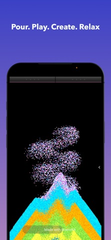

Mix Materials
What happens when heavy sand hits light air? Or when bouncing particles meet sticky ones?
A little time for yourself. Pour some sand, listen to it fall, and make something of your own. Tilt your device when you want to see it move.

Drizzl is a sand and fluid physics sandbox for iPhone and iPad. Come for a relaxing break, make your own sand art, or experiment with gravity and mixing. The sound responds to the particles as you play, with haptic feedback on supported iPhones.
What happens when heavy sand hits light air? Or when bouncing particles meet sticky ones?
And destroy it (if you please). Build satisfying mounds or carve clean lines.
Every combination behaves differently. Experiment with gravity, mixing, and flow.
No two sessions are the same. The physics engine ensures new, mesmerising patterns every time.
It sounds live. Soft slides, heavy crashes. Mixing materials creates your own evolving ASMR soundtrack.
Drizzl is a kinetic sand and fluid sandbox for iPhone and iPad. Pour and mix particles, carve sand art, change gravity, and hear the sound respond to what you do.
Pour a slow pile, listen to the sand move, and change the canvas at your own pace. Drizzl combines freeform play, live ASMR sound, and haptic feedback on supported iPhones.
Yes. Mix sand and fluids, watch them flow and pile up, then tilt or shake your device to change how the scene moves. You can make a shape and see what gravity does to it.
Yes. Build a pile, mix colors and materials, and carve lines through your canvas. Tilt or shake your device when you want to send it all moving again.
The audio responds to the physics, from soft slides to heavier crashes. Supported iPhones also have grainy haptic feedback. Haptics depend on the device.
The core sandbox works offline and no account is required. Ads and purchases need an internet connection.
Drizzl is free to download. It contains ads and optional in-app purchases. The App Store shows the current purchase options for your country.
Drizzl supports iPhone and iPad with iOS or iPadOS 17.6 or later. Search the App Store for Drizzl - ASMR Sandbox, by Pranav Garg.